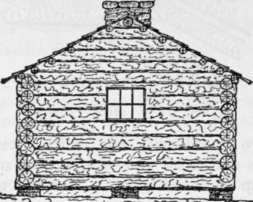

Cabin Building And Fitting Up. Part 3
Description
This section is from the book "Camping And Woodcraft", by Horace Kephart. Also available from Amazon: Camping and Woodcraft.
Cabin Building And Fitting Up. Part 3
Now go ahead with the walls. Lay the logs with butts and small ends alternating, so the walls may go up of even height. To raise the logs, as the work advances, lean two poles against the wall as skids. Near each end of the top log fasten a rope, pass the free ends of the ropes under and over the log to be lifted, and up to the corner men, who pull on these while other men push from below.
At the height of windows, door and fireplace, make saw cuts almost through the upper log, in each case, at proper distance apart, so that afterward the crosscut blade can be pushed through and the spaces sawed out.
Roof
For a clapboard roof the stringers or rafters run lengthwise of the cabin instead of from eaves to ridge (Fig. 75). The gables are built of logs notched for the stringers, spiked together, and cut to the proper pitch. Select straight, slender poles for stringers. The ridge pole should be heavier: say 8 or 10 inches thick.
The pitch of the roof will depend upon climatic conditions; rather flat for a dry region, and steeper for a wet one (not less than one foot rise to two of width tor main building, and one to four for porch and kitchen). If there are heavy snowfalls, a steep pitch is required to stand the strain, and to keep snow-water from backing up under the shingles, In laying the roof, begin at the eaves, letting several inches overhang. The clapboards should also project a little at the sides of the roof. When the first course is laid, take the straight-edge that you used for leveling the sills and nail it lightly on top of this course as a guide for the next to butt against. Then lay the second course, breaking joints carefully; and so on to the top. If you finish the ridge with a saddle-board (inverted trough to shed water from the joint), or a log hewed out to serve as such, then the clapboards are sawed off to fit. Otherwise, let the top course on one side project, slanting upward over the other (this is not a reliable device for a very windy or snowy climate).
Fig. 75. Log cabin (end view).
Floor
In laying the floor, leave an open space in front of fireplace for the hearth. As the joists will shrink in seasoning, it is wise to use as few nails as practicable (only at ends of boards). Next year the planks may be taken up to be refitted where they have gaped apart, blocked up where the joists have sagged, driven tight together by an extra strip, and then nailed permanently in place.
Door And Windows
Before sawing out the door space, tack a plank vertically on each side as a guide, and block or wedge the logs so they cannot sag when cut through. Remove one handle from your crosscut saw, push the blade through the cut that you made when building the wall, attach handle again, and saw out. Snap a chalk-line along the log that comes directly over the doorway, and chisel out a section three or four inches deep for top of door frame to be nailed to. Spike the jambs to ends of abutting logs. Fit in a washboard beveled on both sides.
The door should swing inward; otherwise, if the cabin is occupied in winter, you may find your egress blocked by a snow-drift.
If you can bring in a screen door, by all means do so. In such case you may as well bring also s, ready-made door and casing. If means of transportation do not permit this, then make a simple batten door. Use wrought nails, as they can be clinched more neatly and firmly than wire ones.
To Hang A Door
Place it exactly in position (shut) with bottom and sides wedged to give proper clearance. Set the top hinge so that its pin is just in line with crack between door and jamb, and nail it; so also with the lower one. Fit the lock, or make a wooden latch and attach hasp and padlock.
The windows, being only single sashes, may be hinged to their casings, like the door, or fitted on slides (Fig. 78). Shutters should be provided to close the openings when the cabin is left unoccupied. They may be fitted to bolt from the inside.
There may well be a third window in our design, alongside the door and over the washstand. If a kitchen is added, the rear window space will be sawed down for a doorway.
Chimney
Saw out of the end wall a space for the chimney, just as you did for the doorway. The opening between wing walls of fireplace should be about 4 feet wide, 18 inches deep, and 3 feet high. The sides of fireplaces often are built narrow within and flaring outward, so as to help throw( the heat out into the room. This is well enough where fuel must be economized; but in the big forest, where there is abundance, it is best to build the fireplace with straight sides, so that backlogs of nearly 4-foot length can be used. This saves a lot of chopping.
If the back of the fireplace is built up straight into the flue, the chimney is very likely to smoke whenever the air is heavy or the winds contrary. To insure a good draught, build the upper part of the fireback with a forward slope, as shown in Fig. 76, forming a "throat" (a) about 5 inches above the front of arch or lintels and only 3 or 4 inches deep. The top of this throat forms a ledge (b) Fig. 76_Fireplace tnat checks wind from (vertical section) rushing down the flue.
To support the rocks over the fireplace, instead of building an arch (which is likely to crack or give Way from settling of chimney) set in two flat steel bars, 2 1/2 x 1/4 inch, as lintels (c).
Build the wing walls of the fireplace out into the cabin far enough to protect the ends of abutting logs, and to support a plank or puncheon for mantelshelf (e). The upper part of the chimney goes quite outside the cabin, and so requires no flashings.
In backwoods cabins the chimneys generally are built up without mortar, clay being used instead. As clay shrinks and loosens in drying, such a structure must be chinked over again at intervals. It fs more satisfactory to take in with you a sack of cement, if possible, and use around the joints of fireplace and hearth a mixture of one part cement to two of clean sand. Mix only a little at a time, as it soon sets. However, this may be deferred until the second season, by which time the chimney is likely to have settled and opened the joints here and there.
Continue to:
- prev: Cabin Building And Fitting Up. Part 2
- Table of Contents
- next: Cabin Building And Fitting Up. Part 4